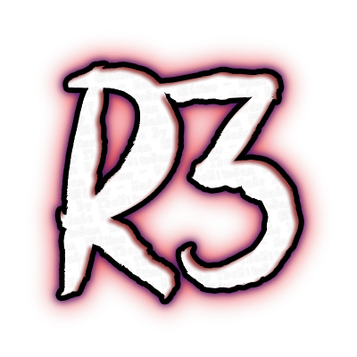
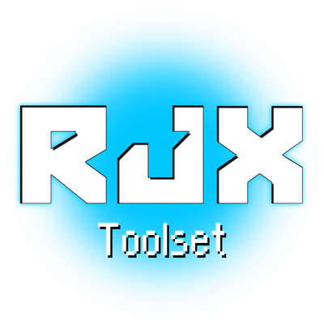

TheMitoSan Main Tools

R3ditor
A tool used to create simple mods for all versions of Resident Evil 3!

RJX Toolset
A tool written in HTML5 used to update, backup and restore Ryujinx files!
MythDeck
This is a very old experiment - a HTML5
(Radio-Like)
Music Player.
2020 - Site created by
TheMitoSan
, Art by
Y (The Artist) zu